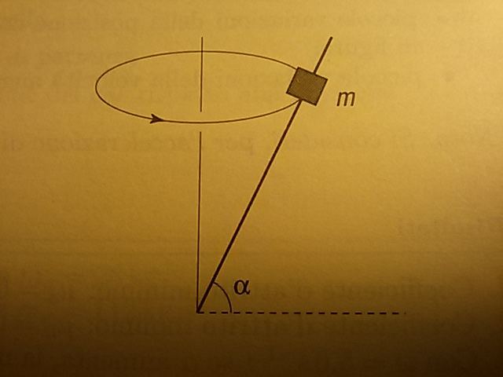

Simone25617 feb 2015, 0:40
Un asta rigida è inclinata inclinata di un angolo \(\alpha\) rispetto all'orizzontale e ruota con velocitá angolare \(\omega\) attorno ad un asse verticale. Un piccolo corpo di massa m può scivolare lungo l'asta, il coefficiente di attrito vale \(\mu\).
Si determini la condizione (distanza del corpo dal centro rotante) per cui il corpo rimane fisso nella stessa posizione durante la rotazione dell'asta.
-
Allegati
-

- 14241263912311101844551.jpg (77.5 KiB) Visto 6281 volte
Simone25617 feb 2015, 11:25
Guarda non ho provato a fare trasformazioni trigonometriche per rendere il risultato (in parte) uguale al mio! Ti avviso che comunque un po' ci assomiglia! Ma devo interromperti:
Tu hai messo che il corpo deve avere una particolare distanza dal centro! Tuttavia è più logico ipotizzare che il corpo sia compreso in un intervallo di lunghezza! Infatti se non ci fosse attrito bisognerebbe equilibrare perfettamente forza centrifuga e forza gravitazionale (nelle loro opportune componenti), con l'attrito capisci che si può in qualche modo discostarsi da questo punto di una piccola lunghezza prima che il corpo riesca effettivamente a scappare via!
Simone25617 feb 2015, 13:58
Ok! ;)
Per curiosità, questo è un problema IPhO di 40 anni fa! :)
sall9617 feb 2015, 14:38
Il caso sopra era con l'attrito rivolto verso l'alto, facendo anche l'altro caso mi viene
\(\dfrac{g(sen(\alpha)-\mu cos(\alpha))}{{\omega}^2cos(\alpha)\cdot(cos(\alpha)+\mu sen(\alpha))}\leq d \leq \dfrac{g(sen(\alpha)+\mu cos(\alpha))}{{\omega}^2cos(\alpha)\cdot(cos(\alpha)-\mu sen(\alpha))}\)
spero sia giusto :?
EDIT: ho corretto l'angolo :D
Simone256 ha scritto:Per curiosità, questo è un problema IPhO di 40 anni fa! :)
Carino, ovviamente molto piu' semplice di quelli che ci sono adesso :lol:
Simone25617 feb 2015, 16:20
Sicuro di non aver definito \(\alpha\) come il complementare di quello indicato nel disegno?
Potrei essere anch'io che faccio casino con la trigonometria eh ;)
Simone25617 feb 2015, 16:58
Hahahaha tranquillo! Se vuoi scrivi un abbozzo di soluzione e poi ti cedo il testimone :)
Simone25617 feb 2015, 19:12
Ottimo vai pure col prossimo :D